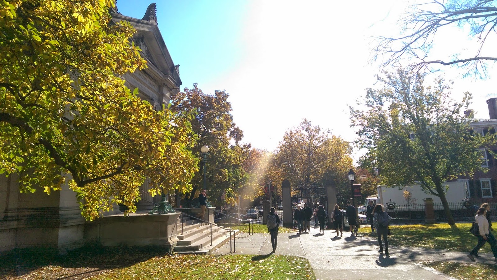
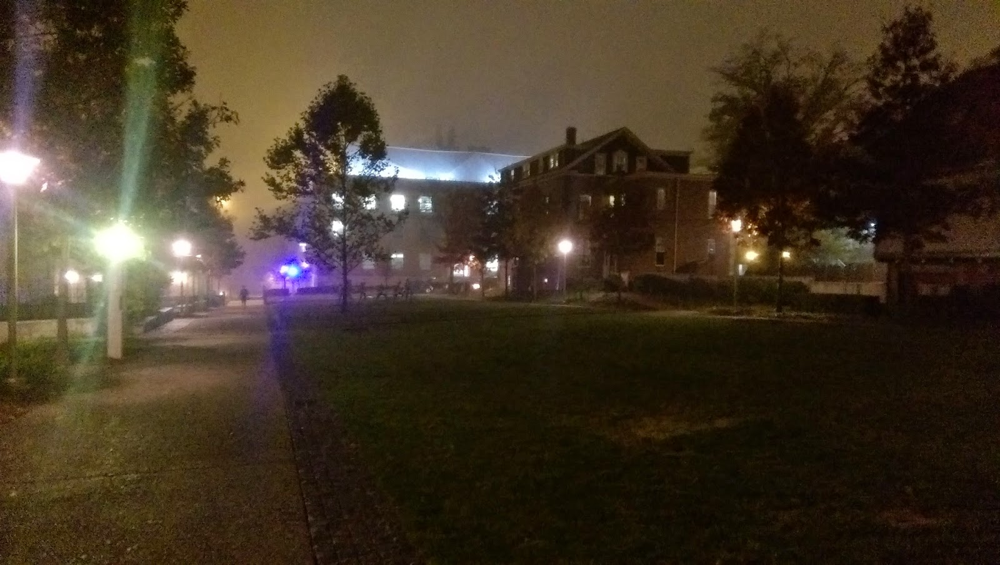

December 12, 2014
As finals week begins I thought it would be interesting to reflect on my first semester in college. For any prospective student reading this, keep in mind that these are my thoughts, and that one's college experience will vary tremendously based on their own character.
This is perhaps one of the most important things you learn in college. One experiences and learns to respect different lifestyles. My impression of college students prior to becoming one myself was relatively limited. I figured everyone studied hard, slept really late, and hung out with friends as much as possible. It was a rosy view, and don't get me wrong, for most college students, this is indeed an ideal world.

And yet one also encounters countless distinct lifestyles in college. Some students wake up early everyday for work or sports practice, and sleep even earlier than they did in high school. Some party hard every Friday, while others may prefer the Tuesday when they don't have classes. There are students whose schedule goes in periods of work alternating with play, while others work hard all semester round and still rarely show up to social events.
In high school, one has vague notions of who "studies a lot" or "is a jock" to create a sense as to that person's time allocation. But in college, this is taken to a whole new level. With a roommate and close friends that one will spend everyday with, one realizes how distinct everyone's living patterns really are, and how these patterns can facilitate deep friendships as well as initial estrangement. In short, college teaches diversity in more than just the race and economic status of one's peers.
Academically speaking, college is truly a different world from high school. Perhaps the most important distinction is that you are in a sense, "allowed to fail" in college, especially at a place like Brown.
In high school, if you fail that has consequences not only for you, but for your teacher, your school, your district, and possibly the all important standardized test averages. Sooner or later, no one will want to move to your town because your school has such a bad reputation!

Of course, I'm perhaps exaggerating a bit. There's also the fact that one is assumed to be less mature as a high school student, and teachers/adults will go out of their way to assist students in anyway possible.
In college, if you fail, well you just fail. It may drag down the course average a bit, but then again, even that always assumes that some people will fail. Professors certainly don't want you to fail, but if you do they are not obligated or even necessarily compelled to go out of their way to help you (if they have TAs.)
I first realized this as I sat watching a professor give a lecture to me... and 300 other students. I could not come to class. Homework was handed in digitally through a computer system. Lecture slides were available online, because one would need to do self study to understand the material. If one didn't keep up, it would be extremely easy to fail. Besides a possible warning email, there would not be a teacher constantly checking up on you.
I guess the sum of it all is that in college you are (at least academically) truly an adult. Occasionally, you'll work in the library or computer lab and see a 40 year old studying along with you. You're truly responsible for yourself, and there's both a great freedom and weight in that.
These are the two most important reflections I will share today. If there's one thing that I'd want you to pick up from this, it's that there is no definitive college experience. You'll might hear older classmates talk about how difficult the work is and how much more packed their schedule is in college. Others may find it a lot less stressful and far more liberating. Some will feel homesick, and others will belong immediately. In the end, the only thing that everyone says that is definitely true is this:
It's what you make of it.